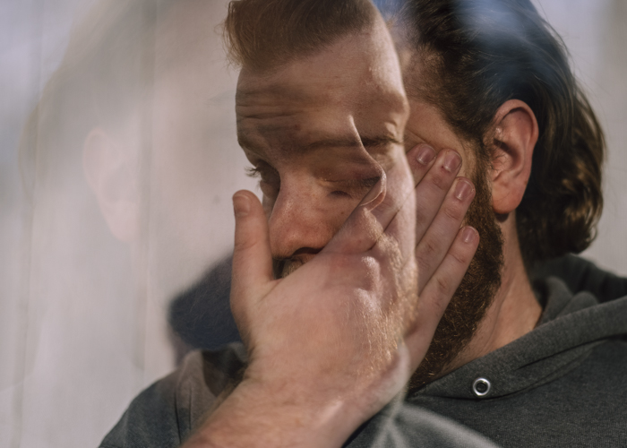

Evan reflects on the influence of cultural masculinity norms on his mental health
Evan works on his motorcycle on a cold Thursday evening in his Plains, Ohio storage unit that he and his roommates share.
Under a flickering fluorescent light in a storage unit, Evan Phillips and Hunter Lyerla are reattaching the carburetors to the engine on Evan’s 1982 Honda Nighthawk. Although he stands within an inch of his best friend, Evan feels detached from Hunter. Many college students Evan’s age are out to sample the party scene in Athens, Ohio walking under streetlights Uptown, past loud, pulsating music or maybe going to an underground house show. His Thursday night is far from that. He prefers quiet and isolation to a crowded bar.
As he works beside Hunter, Evan feels trapped and emotionally stuck, hardly an unfamiliar feeling for him. Once again, he is unable to confide in a close friend. He’s aching inside, because he wants to say so much but cannot cross that boundary. He’s worried that Hunter won’t understand him because Evan was raised to ignore insecurities — it’s something that men just don’t talk about. He feels safer this way because it’s how he’s been conditioned to act his entire life — to be a man.
Patrons wait to be served at Tony's Tavern in downtown Athens, Ohio.
In his bed a few hours later, Evan stares at the ceiling, tossing from side to side. His mind races with uncontrollable thoughts about his past relationships, school, work, regrets and everything in between. He hasn’t been drinking, but his mind stumbles between those thoughts. He grabs his phone and starts to watch “Hand Tools Rescue,” a YouTube channel about restoring old tools.
“You just hear the tap of a hammer or something similar,” Evan says. “It helps that there is no dialogue so then you don’t have to focus on anything. I think old tools are pretty neat. It’s nice to see old, rusty things getting restored; it calms me down.”
He desperately hopes that the channel will tire him out. After three hours, Evan’s mind is still racing, and he cannot get himself to shut his eyes.
It’s midnight. He bounces out his bed, puts on his gray hoodie and sweatpants and hops into his 2002 Lexus IS300, a stick shift. He heads toward the Marathon gas station on Stimson Avenue to fill his gas tank. He shifts from first to third gear as he gets on State Route 690 and heads toward State Route 550 until he arrives in Bartlett. That is tonight’s route.
“This car ride is not for the faint of heart,” Evan says.
His seat belt tightens on his chest as he exits the highway and downshifts from fifth to third gear to prepare for the turns. His route makes him forget about everything for a little while. It forces him to stay in the moment by navigating the narrow, dark turns, because the infamous State Route 555, also known as the “Triple Nickel,” is famous for its tight turns and rolling hills.
He knows the tighter the roads, the deeper the focus. So every time he changes gears, his smirk broadens. Reenergized, he sits a little higher in his seat, and clutches the steering wheel. The engine revs as he shifts gears, and the tires squeal during the turns.
“When I get on the 555 road, it’s very twisty, so it forces you to pay attention. So it’s a lot easier for me to just focus on that instead of whatever I have going on in my life,” Evan says.
“It’s just you and the steering wheel.”
Evan is now on the homestretch — U.S. 50 West. The open, clear road allows more space for him to agonize about mistakes he has made.
“I tend to focus a little bit more on things that I wish I should have done differently, things I should probably leave in the past, whether it was relationships, things I did or things I said,” he says. “That is just always something that is on my mind — whether it’s good or bad, but typically it’s bad.”
At 2 a.m., Evan tiptoes back to his room and braces the door as it clicks shut. He’s a little more at ease as he tumbles into his bed. Exhausted, he closes his eyes knowing he has to be up in four and a half hours for his 8:30 a.m. guitar class.
Evan’s parents moved to Westerville, a suburb of Columbus, Ohio two years ago. Evan’s parents were hit hard by the 2008 financial crisis, which caused Evan to feel uncertainty about his family’s fate.
Evan is lit by his computer screen in his bedroom at his home in Athens, Ohio.
During the summer between his high school graduation and transition into college, Evan first recognized that many of the internal struggles he had been managing for years were symptoms of larger issues of his mental health.
"A lot of people were telling me you’re nervous because you’re leaving home, but I knew that was not it," Evan says.
“It has been something I have been struggling with in my own head for a while.”
He was working 50 hours a week as a line cook at Panera Bread, his shifts starting daily at 5 a.m. and ending around 3 p.m.
“This was hard for an 18-year-old boy who was trying to prepare for college,” he says. “That was the point where I spiraled into a weeklong breakdown, and that is when I knew I needed to get help. It was tough to overcome that at first.”
During that week, Evan essentially stopped eating. He would not feel hungry for days at a time and lost weight. He would often lie in bed until he had to get up for work without having slept at all. From that Tuesday night to Friday morning he slept a total of two hours.
“I was going through a lot at that time with personal relationships and what-not, so I have to assume that contributed somewhat to my issues, but I don’t believe it was the sole cause,” Evan says. “At the end of this week, I started to just crash, both emotionally and physically, and ended up sleeping in my car on Friday morning when I got to work, only to be woken up by my manager tapping on my window after my shift had started.”
Evan managed to make it through the day, but as soon as his shift was over, he went straight home and slept about six hours, the most sleep he had gotten in weeks. Soon after, Evan admitted to his parents that he struggled with depression.
“I still look at that week as the point where my mental health started declining and what, for lack of a better phrase, got me to the point of where my mental state is right now,” he says.
As the years went on, many specialists diagnosed Evan with several different mental health issues, the most recent of which is a form of persistent mild depression called “dysthymia.” He also struggles with anxiety and obsessive-compulsive disorder (OCD).
Evan has struggled to sleep since he was 10 but started having serious issues with sleep when he was in high school. His insomnia worsened with the stress of college.
“When you think of OCD, you think of someone who has to turn the light switch on and off 20 times, but I am not quite that bad,” Evan says.
“I just can't make eye contact with people; I tend to look at the bridge of people's nose.”
Forty years of research by the American Psychological Association presents substantial evidence that Evan’s mental health issues stem from traditional masculinity ideology. According to the psychological association, men represent 77 percent of homicide victims and commit 90 percent of homicides in the United States. Men are most at risk of being victims of violent crime. Men are 3.5 times more likely than women to die by suicide, and their life expectancy is 4.9 years shorter than women’s. These numbers correlate directly with how men are supposed to think, feel and act: traditional masculinity ideology.
Evan’s parents moved to Westerville, a suburb of Columbus, Ohio two years ago. Evan’s parents were hit hard by the 2008 financial crisis, which caused Evan to feel uncertainty about his family’s fate.
Dr. Ronald F. Levant, the 2005 president of the psychological association, has been studying the psychology of gender for four decades. Levant was the first president of the Society for the Psychological Study of Men and Masculinity, serving as its co-founder and co-chair of the committee that founded the society.
Levant argues that there are two ways of looking at gender and masculinity:
- One is to think that masculinity is biologically based, which means hormones and genes govern how men stereotypically think, feel and behave.
- Another is that gender (masculinity/femininity) is socially constructed and psychologically based.
Levant says he has evidence that the psychological and social effects are stronger than the biological effects. He argues that U.S. men have higher morbidity rates than women in terms of cancer, cardiovascular disease, unintentional injuries and infectious disease, particularly HIV AIDS and a few others.
Further, he says evidence suggests that men's behaviors — especially their behaviors when they reach their 30s — account for the longevity and morbidity differences.
For example, Evan goes on high-velocity, late-night drives by himself on narrow, winding roads to avoid thinking about his troubles.
He has tried medications to help with his anxiety and depression, one of them was Zoloft, an antidepressant prescribed for the treatment of depression, social anxiety disorder and other mental health symptoms.
Men Seeking Mental Health Treatment & Men Prescribed Medication for Mental Health in the U.S. 2014-2017
Data collected from Substance Abuse and Mental Health Services Administration 2015/2017 National Survey on Drug Use and Health: Detailed Tables.
Even though Zoloft worked for a while, Evan still needed something that would help him sleep. His then-therapist prescribed Ambien, a medication that treats insomnia in adults.
“It's highly addictive, so people end up using it recreationally," Evan says. “If you take it and try to stay awake through it, it’s basically like getting blackout drunk except you have to have fine motor skills and it's just a recipe for disaster."
In January 2018, Evan tried to overdose on Ambien and alcohol. He was home alone that night; his only roommate was at his parents’ house for the weekend.
“It had been a shitty couple of months for me leading up to that point. I was in a mental state that can only be described as ‘broken,’” Evan says.
“I was running on zero to two hours of sleep each night, having auditory hallucinations where I hear people call my name when I was home alone and hear screams that sounded like they were right next to me," he says. “I was even having false memories that oftentimes made no sense at all," Evan says.
For a week or so leading up to that night, he had been taking well above his prescribed dose of Ambien nightly. Evan was talking to his friend at the time through FaceTime from before he had taken the Ambien until around the end of the night. At first, he took about 20 milligrams; he was prescribed five milligrams a night.
“One problem with Ambien is that people often tend to take more once they’re under the influence if they’re using it recreationally,” he says. “I was no stranger to doing that.”
However, on this night Evan ended up taking 80 milligrams on top of the 20 milligrams he had already taken, according to his friend’s recollection.
“I was now on 20 times my prescribed dosage, and decided that I was going to try to down some alcohol and see if I'd just pass out and not wake up,” Evan says. “I downed about half a bottle of Seagram's Gin, which I can no longer even look at, and laid in my bed, still on FaceTime. At this point she had no idea what I was doing. I just seemed like my normal self even after I took 20 milligrams or so. I just didn’t seem any different.”
Evan decided to end his life that night.
Ten minutes after he drank the gin, his night took a different turn.
“I remember this part clearly," Evan says. “I felt my insides start to burn. My heart rate increased dramatically, and I started to sweat profusely. I grabbed the trash can next to my bed and started to vomit blood and alcohol. I remember thinking between breaths, ‘I'm going to die like this, alone in my room and my roommate is going to find me here in a few days.’”‘I'm going to die like this, alone in my room and my roommate is going to find me here in a few days.’”
Evan didn’t want his roommate to walk in and find him on the ground dead with his blood and vomit in the trash can next to him.
“It was unfair to him, and I could never imagine putting anyone through that,” Evan says.
“I thought of my family, all of my friends and everyone who would be affected by this. I realized in that moment that, even though I didn’t want to be alive, this isn’t how I wanted to die. It was much too gruesome and, to be very blunt, left too much of a mess that I didn’t want someone to have to deal with."
He hung up the phone with his friend and sat on the edge of his bed staring at the blood and vomit. He couldn’t believe what he had done, what his life had come to. In that moment, despite what he was feeling, despite not wanting to live, he found the strength to get up and get rid of the trash can.
Evan walked out to the porch, that his room was connected to, and dumped the trash can into the bushes.
“I left it there, and I actually left it there when I moved out as I couldn’t stand the thought of having to pick it up and remember what I had done. I walked back inside, and just sat in silence until I managed to pass out, all the while thinking I was still going to die, but too scared to call 911,” Evan says.
“I don't know why it didn’t kill me that night.”
Evan had been contemplating suicide for a while. He knew his roommate would be out of town during that week, so that night would be the time to do it.
Controllable behaviors, such as substance abuse, that put one’s health at risk are one of the ways that men demonstrate their masculinity, Levant says. They want to take control of the situation: Evan’s attempts at suicide were his answer to the problem: his mental health struggles.
Evan believed it was his only way out.
Levant says other examples of controllable behaviors include physical inactivity, poor diet and nutrition, tobacco use, irresponsible risky sexual behavior, risky behavior for preventable injuries and violence.
Boys who do not conform to masculine norms get bullied, beaten and harassed, he says.
“Boys who are not tough and dominant and who show their emotions or cry, who exhibit any behavior that is considered feminine, get harassed in school,” Levant says. “They get talked to by their parents, and parents tell them things like, ‘Big boys don’t cry’ or ‘C’mon, man up’ or ‘If you don’t stop crying, I’ll give you something to cry about.’”
Levant describes traditional masculinity ideology as beliefs shared broadly in U.S. society by people of all genders about how boys and men should think, feel and act.
Traditional masculinity ideology is associated with a whole host of harmful outcomes, Levant says. The psychological association has been conducting research in this area for over four decades, and it has published a journal since 2000 titled “Psychology of Men and Masculinity.”
He says that traditional masculinity ideology exists in the culture, which people believe to varying extents has been defined to consist of seven norms that guide boys’ and men’s thoughts, feelings and actions.
The norms include avoidance of femininity, negativity toward sexual minorities, self-reliance through mechanical skills, toughness, dominance, importance of sex and restrictive emotionality.
Levant says that traditional masculinity ideology is problematic because most men, and especially boys, feel that it’s obligatory when they are growing up. Parents, particularly fathers and certainly peers and friends, demand that they have to exhibit masculine traits.
“I personally think a lot of men like to be stoic,” Evan says.
Evan says he thinks there is a stigma behind it, that it’s more masculine to not show emotion.
“My parents raised me to be stoic. My dad is a very stoic man. I have seen him cry twice in my life and that is about the extent of his emotions,” Evan says. “I don’t think they directly ask me to be a stoic person, but I think they expect that. I don’t think they do it consciously. I was just raised around stoic parents and then it kind of translated to me.”
Evan and hunter sit in car they fixed.
Evan has always struggled to discuss his feelings openly with family and close friends because of the stigma.
The problem with forcing men to conform to traditional masculine norms is the damage that it inflicts on boys. Levant says that by the time most men reach adulthood, they realize that these norms are impossible, that they are not workable and that they don’t meet them.
“They accept that, and they come to terms with who they are,” Levant says. “They realize they are human, they are fallible, they are not perfect and they know that people may not agree with some of those norms. But most healthy adults say, ‘OK. I am who I am, and that is OK.’”
Levant believes that men’s endorsement of traditional masculinity ideology contributes to men having very negative attitudes about seeking treatment for mental health.
“Seeking mental health care violates traditional masculinity norms of self-reliance,” Levant says.
“Men are not supposed to be vulnerable.”
There is a silver lining in Evan’s story.
He understands the magnitude of struggling with mental health issues; how it affects every aspect of a person’s life. He says he is a better son, friend and brother because of his struggles; he’s empathetic. If society continues to allow men to commit to traditional masculinity ideology, a lot of men will feel trapped, just as Evan felt when he almost took his life. Men allowing themselves to be vulnerable does not make them less of a man.
It makes them human.